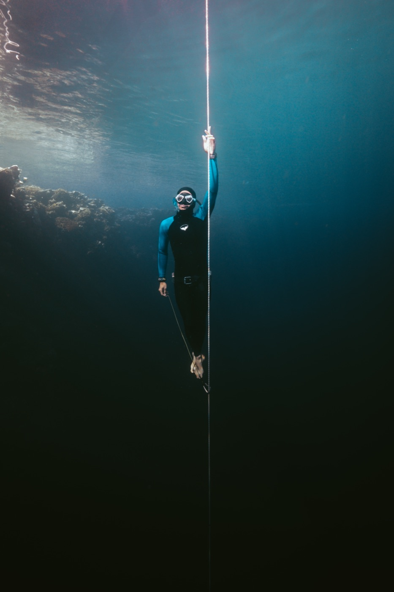

Courses

- AIDA 1
- AIDA 2
- AIDA 3
- AIDA 4
A course day
We start with theory, then we go into the water. After every water session there's a debriefing, usually with videos, because it's so much easier to understand what to fix when you can actually see it, especially when it's about technique.
Safe, and at home
My students feel at home, and they feel really safe in the water. I follow them on every single dive, especially in beginner courses, when everything is still new.